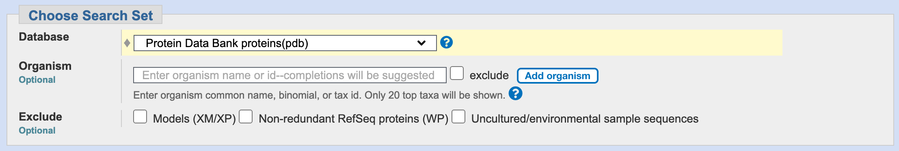
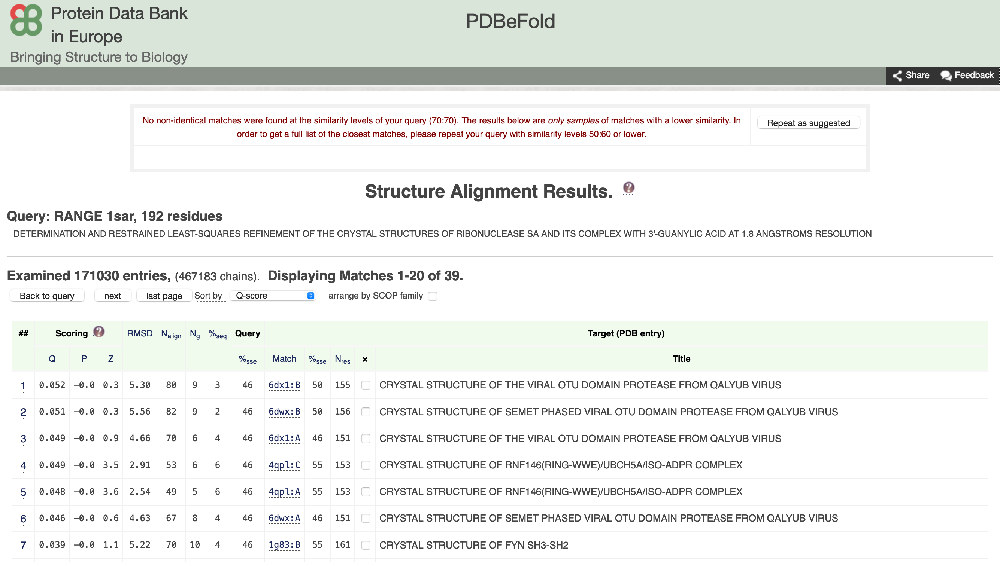

VAJA: Iskanje podobnih struktur
Contents
VAJA: Iskanje podobnih struktur¶
Na primeru si bomo ogledali, kako lahko proteine s podobno strukturo identificiramo z iskanjem z uporabo BLAST (uporabimo aminokislinsko zaporedje proteina, za katerega želimo najti podobne strukture) ter tudi direktno z iskanjem podobnih struktur.
Uvod¶
Če kot vhodni podatek uporabimo aminokislinsko zaporedje proteina (ali njegovega dela), za katerega želimo najti podobne strukture oz. identificirati podobne proteine z znano strukturo izhajamo iz dejstva, da na podobno strukturo/zvitje kaže podobno aminokislinsko zaporedje kaže. Iskanje izvedemo z različico blastp programa BLAST (seveda lahko izvedemo tudi iskanje s psi-blast), pri tem pa kot zbirko za iskanje izberemo Protein Data Bank proteins(pdb):

Drug način iskanja je da kot vhodni podatek uporabimo strukturo sámo. Na voljo je več orodij, ki tako iskanje omogočajo, na primer PDBeFold (iskanje prek ujemanja elementov sekundarne strukture) in DALI (uporaba matrik razdalj med ak-ostanki).
Pri iskanju s PDBeFold lahko kot iskanje uporabimo datoteko s strukturo, ki jo prenesemo na strežnik, ali pa uporabimo strukturo iz zbirke PDB. Pri tem se lahko pri iskanju podobnih struktur omejimo na nek segment strukture (veriga, območje ak-ostankov):

PDBeFold prikaže rezultate v obliki tabele, ki je provzeto sortirana po padajoči vrednosti Q. Slednja predstavlja funkcijo kvalitete poravnave atomov C\(_{\alpha}\), ki vključuje tako dolžino poravnave kot tudi RMSD. Na splošno so dobre poravnave take, ki imajo nizek RMSD ter visoko število poravnanih ak-ostankov. Izračuna se po formuli:
kjer je \(R_0\) empirično določen parameter (3 Å), \(N_1\) ter \(N_2\) predstavljata število ak-osnatkov v poravnanih proteinih, \(N_{poravnano}\) pa predstavlja število poravnanih ak-ostankov. Za identične strukture velja \(RMSD=1\) in \(N_1 = N_2 = N_{poravnano}\), posledično je \(Q = 1\).
V tabeli je še več drugih parametrov, do njihovega opisa pridete s klikom na ime stolpca v tabeli. 
Naloga¶
Zanima nas, kateremu drugemu proteinu z znano strukturo je podobna C-končna zunajcelična domena človeškega proteina EpCAM, ki ustreza aminokislinskim ostankom 139-265 (številčenje po UniProt). Iskanje izvedite na dva načina:
z uporabo aminokislinskega zaporedja in
z uporabo strukture tega dela molekule pri tem pa uporabite orodje PDBeFold
Analizirajte rezultate, pripravite superpozicijo struktur v UCSF Chimera ter odgovorite na vprašanja:
S katerim pristopom identificiramo več zadetkov in zakaj?
Je zvitje tega dela EpCAM in identificiranih podobnih proteinov dejansko enako?
Je EpCAM funkcijsko soroden identificiranim proteinom?